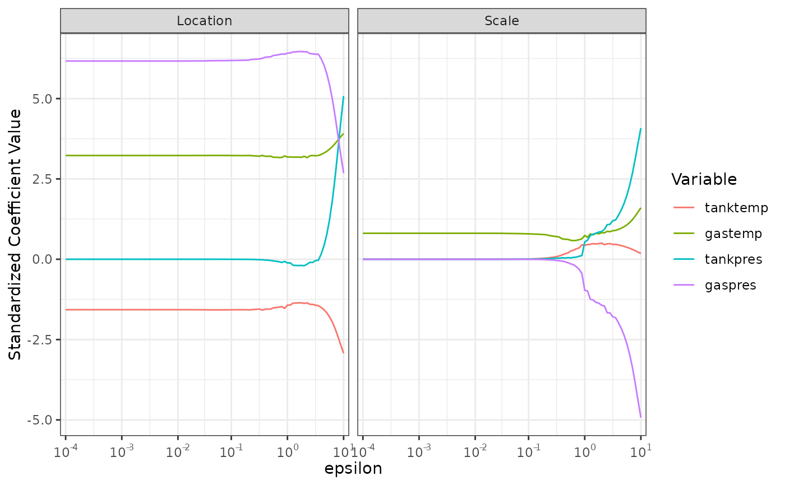

This function plots the standardized coefficient values with respect to the \(\epsilon\)-telescope for the location (and dispersion) components.
Arguments
- obj
An object of class “
smoothic” which is the result of a call tosmoothic.- log_scale_x
Default is
log_scale_x = TRUE, which uses a log scale on the x-axis. Iflog_scale_x = FALSE, then the raw values of the \(\epsilon\)-telescope are plotted.- log_scale_x_pretty
Default is
log_scale_x_pretty = TRUE, where the x-axis labels are “pretty”.epsilon_1andepsilon_Tmust be a number to the power of 10 for this to apply.- facet_scales
Default is
facet_scales = "fixed". This is supplied tofacet_wrap.
Examples
# Sniffer Data --------------------
# MPR Model ----
results <- smoothic(
formula = y ~ .,
data = sniffer,
family = "normal",
model = "mpr"
)
plot_paths(results)
